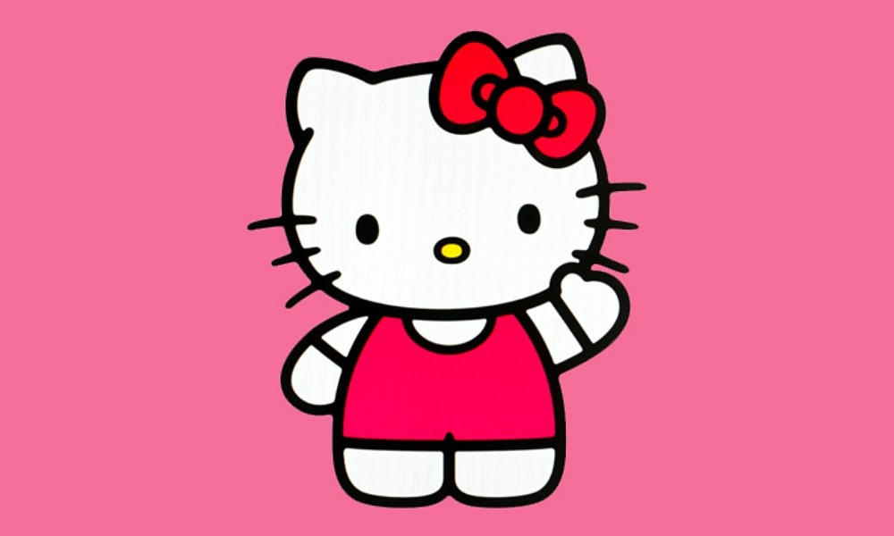

<ion-header>
  <ion-toolbar>
   <ion-button color="light" menuToggle (click)="login()">
     <ion-icon name="arrow-back"></ion-icon>
   </ion-button>
    <ion-title>Categorias</ion-title>
  </ion-toolbar>
</ion-header>

<ion-content padding>
<ion-list>
  <button class="cat-item" ion-item *ngFor="let item of items">

    <ion-item>
      <ion-thumbnail slot="end">
        
      </ion-thumbnail>
      <ion-label>Item Thumbnail</ion-label>
    </ion-item>
  </button>
</ion-list>
</ion-content>